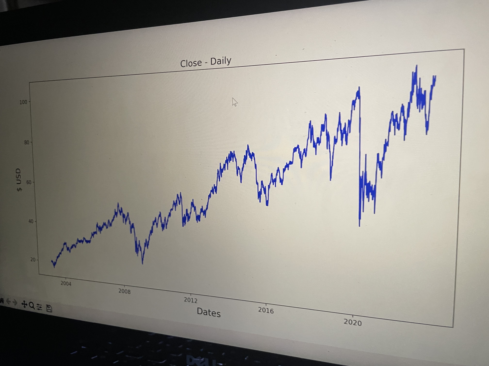

Home Page
About Ilyes
My Projects
Impact
ML Independent Study
Contact Me
a self-guided course I single-handedly developed & followed that rigorously studied various areas of ML while applying them to the real world
ML independent study

This website was built from scratch using HTML, CSS, and JS; it is hosted by a Github repository!

